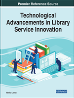

Technological Advancements in Library Service Innovation
January 19, 2022

Description
Innovations in library services are rapidly developing within numerous areas including building design, program and event planning, patron experience and engagement, literacy program development, and administration and management. To ensure these changes are implemented and considered successfully, a closer look at the challenges, trends, and practices of these innovations is crucial.
Technological Advancements in Library Service Innovation examines the recent activities of successful and groundbreaking research and practices around the world surrounding library service innovation and presents various forward-thinking initiatives. It also provides an overview of libraries’ successful experiences, identifies emerging global themes and trends, and offers guidance to library practitioners on how to pursue the recent trends in their own library environment. Covering topics such as technology adoption and organizational structures, this book is ideal for library professionals, researchers, academicians, instructors, and students.
Coverage
The many academic areas covered in this publication include, but are not limited to:
- Administration
- Building Design
- Conceptual Models
- Creative Programming
- Digital Tools
- Disruptive Innovation
- Information Retrieval
- Knowledge Management
- Organizational Structures
- Technology Adoption
Table of Content
Chapter 1 The Tele-Reference Model: Adopting Virtual Tools to Enhance Reference Services During COVID-19 and Beyond
Sandra Avila, Sarah A. Norris, Rebecca M. Murphey, Min Tong, Richard H. Harrison II
Abstract At the University of Central Florida Libraries, a new alternative to traditional reference service was adopted during the COVID-19 pandemic as a remote solution for safely staffing the Research and Information Desk (RAID) at the John C. Hitt Library. Due to the challenges of a partial library re-opening at the height of COVID-19 variant infection rates in Florida, a safe alternative to physically staffing RAID was conceived and coined “Tele-Reference.” Utilizing a Zoom institutional license and readily available work equipment with audio and video capabilities, the Tele-Reference service model was developed by our research and information services librarians. The implementation, challenges, assessment, and future directions of using Tele-Reference at the University of Central Florida Libraries, as well as possible applications at other institutions, are explored herein.
Chapter 2 Knowledge Services Development in Unprecedented Circumstances: Experiences of the National Agricultural Library of CAAS
Ruixue Zhao, Jiao Li, Jianhua Zheng
Abstract Libraries are seeing a significant shift in acquisition habits as physical libraries and their workers, services, and users are deeply impacted by the COVID-19 pandemic. Users now look to libraries to assist them by providing digital resources, tools, or knowledge products via knowledge service platforms for learning and research. The trend reflects how the library’s role as an online solution provider widens and they are required to be more adept at managing repositories and innovative services development. This chapter is to share the endeavors and experiences of the National Agricultural Library of the Chinese Academy of Agricultural Sciences in knowledge services during the unprecedented and uncertain time, which is a process full of change and perseverance, with the hope that it will inspire library colleagues and exchange ideas.
Chapter 3 How Does AI Make Libraries Smart?: A Case Study of Hangzhou Public Library
Bing Nie, Ting Wang, Brady Daniel Lund, Fengping Chen
Abstract In the past two decades, the rapid development of information technology has been widely used in individuals' daily lives, leading to a sea change. As a city at the forefront of artificial intelligence (AI) technology in China, Hangzhou first applied the technology to public library services to relieve the shortage of reference and circulation service resources caused by a large number of regular patrons. This chapter first introduced the application model of AI in various libraries worldwide, then focused on its application in a public library in China, a developing country. This chapter may shed light on the application of AI in other libraries in developing countries.
Chapter 4 Developing Geodetic Search Interface Through Auto-Generation of Geographic Name Authority Datasets
Parthasarathi Mukhopadhyay, Mondrita Mukhopadhyay
Abstract This research study is an attempt to develop a MARC-formatted authority dataset for Indian geo-administrative units given the inadequate coverage of Indian place names in global authority datasets. It starts with an authenticated place names file in CSV format and applies data wrangling tools and techniques to fetch geospatial data and other related datasets from open access data sources to develop a geographic name authority file for Indian place names with geocoordinate data values. Later, this research also demonstrates how that authority dataset can be implemented in an open-source ILS and how retrieval features of a library discovery system can be enhanced through a geodetic search interface by utilizing that authority dataset. The entire methodologies are based on open data, open-source software, and open standards.
Chapter 5 Actor Engagement in the Archival Value Co-Creation Process Through Social Networking Tools: Context of Archive Services in Japan
Md. Mukhlesur Rahman and Kunio Shirahada
Abstract The study aims to determine how social networking tools can help to engage different actors in archive service systems in value co-creation. With this view, this research reviewed the literature on major issues of archive services and collected primary data from 68 local archive centers in Japan. In addition, Twitter data of the National Archives of Japan were collected and analyzed using SPSS 17.0 and SmartPLS. Results show that the archive service system requires three actors: stakeholders, archive staff, and users. These actors can be connected through social networking tools that enable the integration of knowledge and skills to improve the archive management quality and uplift the value of archival resources. The study proposed an integrated archive management framework incorporating the archive administrators, stakeholders, and users. Implementation of the proposed framework can ensure improved management for stakeholders, easily accessible content for users, and improved service and organizational trust for archive centers.
Chapter 6 Information Literacy Module: A Case Study at the International School Library in Malaysia
Mayasari Abdul Majid, Shamila Mohamed Shuhidan
Abstract The school library is recognized as an information center for learning, staffed by certified and professional school librarians, that collaborates with educators. This International School, known as IS1, offers library lesson periods for their primary and secondary students starting from January 2021 to assist and guide students equipping themselves with information literacy skills in supporting their academic purposes. The five information literacy modules were developed, namely Information Resources, OPAC & WEBPath Express (School Databases), Online Information Resources, Citation & References, and Basic Research Steps. After completing the information literacy modules, researchers interview the subject teachers about the perception of the implementation of the information literacy module with the students. Findings show that the implementation of the IL module was a good initiative to collaborate with school librarians to produce self-guided learning to boost student motivation and achievement.
Chapter 7 Opportunities and Challenges of Academic Librarians in Offering Information Literacy Skills Training to Freshmen
Josiline Phiri Chigwada
Abstract The ‘catch them young' concept is a good foundation for developing lifelong learning skills that can be used beyond tertiary education. This is one of the ways of ‘making the book pay' in helping to create an informed society that would take part in the implementation of the Africa we want through the Africa Agenda 2063. A survey was undertaken on how libraries are supporting information literacy and research skills of students for a successful transition from primary and secondary to higher education. Twenty school libraries and 15 academic libraries were purposively selected to participate in the study. Telephone interviews were done with school, teachers, and academic librarians to understand the opportunities and challenges that they are encountering in imparting information literacy and research skills to students in preparing them for higher education in the digital era. The results revealed that there are information literacy programs in schools and universities and the modules are delivered by librarians.
Chapter 8 Digital Information Literacy Among the Faculty of Applied Science Students at a Private University in Malawi
Donald Flywell Malanga, Boemo N. Jorosi, Wallace Chigona
Abstract This chapter reports on the study that aimed to assess the digital information literacy (DIL) skills among second-year students at the Faculty of Applied Science, University of Livingstonia in Malawi. About 132 students were sampled randomly to participate in the survey questionnaire. The study found that although students were aware of different types of digital information sources, they experienced challenges when it came to actual usage. The sampled students showed a deficiency of skills in basic ICTs, use of online databases, search techniques, web retrieval tools, and evaluating digital information. With respect to the ethical use of digital information, the study noted that while students acknowledged the importance of citation and referencing, they demonstrated ignorance on such citation and reference styles and the use of citation and reference management software tools. It also emerged from the study that ICT infrastructure, time limitation, and lack of interest affected student participation in DIL courses. The chapter potentially contributes to policy and practice.
Chapter 9 Management and Use of Metadata as a Legal Information Retrieval Tool: Nigerian Legal Practices
Ismail Olatunji Adeyemi
Abstract The practice of information retrieval (IR) is not new to the legal profession. IR tools have been present in legal research and practices since electronic information resources have gained inroads into the profession. The surge in the use of electronic means to transfer documents owing to the current reality of the COVID-19 pandemic has increased the concerns as to legal metadata. Metadata is important information that describes information or data. It gives more details about a document. Despite the relevance of metadata as a tool in IR, there is little or no clear understanding as to its management and usage amongst Nigerian lawyers in the course of their legal research and academic writings. Moreover, there is silence on the ethical guidelines as to its usage. Therefore, this chapter addresses the concerns of Nigerian lawyers as to how to manage and use metadata as an IR tool and the ethical issues as it concerns the use of metadata among lawyers.
Chapter 10 Role of Medical/Health Librarians in Promoting the Use of Medical Library Resources and Services
Violet E. Ikolo
Abstract Doctors and other health workers are in constant need of quality and timely information. To this end, medical/health librarians have critical roles to play. Their major duty is to advance access to available health information resources and services. However, reports abound of low library usage due to inadequate awareness of the availability of most of the information sources and services in medical libraries. Considering the need for the effective delivery of medical library services, the aim of this chapter was to highlight new roles and duties of medical/health librarians. It also discussed some of the skills that are needed by medical/health librarians. The chapter concludes that medical/health librarians must be engaged in newer roles and duties to be able to provide value-added services that will promote awareness and improve medical library use.
Chapter 11 Libraries in a World of Data: How to Move Forward While Protecting Users
Brady D. Lund
Abstract This chapter discusses five major types of data that libraries may be responsible for the collection, storing, or analyzing of and the threats to privacy faced when dealing with each: web data collection and usage, patron records, learning analytics, research data, and data sharing. It highlights how a lack of clear and consistent policy, improper handling and storage of the data, misuse of the data, and lack of proper informed consent procedures can all compromise patrons' privacy and present threats to patrons' trust in the library. To ensure that data is handled with care, this chapter further introduces four frameworks for ethical data practices, which have recently been proposed in the scholarly literature, and discusses how each may apply to library data issues. By following an ethical framework and developing solid procedures, librarians can ensure private, equitable, and mutually-beneficial data relationships with their patrons, regardless of what new types of data technologies emerge in coming years.
Chapter 12 Library Consumer Engagement Practices
Kojo Kakra Twum, Pearl Joan Korkuvi, Stephen Budu
Abstract Academic libraries over the years have adopted proven business management and marketing strategies that have enhanced service delivery and attainment of objectives. Consumer engagement activities such as online communities of library users have become an emerging trend. This chapter uses an integrative literature review to identify consumer engagement practices that libraries can adopt. The consumer engagement activities identified are enthusiasm, enjoyment, attention, absorption, sharing, learning, and endorsing. In the library context, the main consumer engagement practices relate to user engagement, a form of interaction using technologies. It is expected that the adoption of these consumer engagement activities will enhance the cognitive, affective, and behavioural engagement of library users. Consumer engagement activities have implications for promoting library value perception, benevolence perception, future patronage intention, and affective commitment.
Chapter 13 Open-Source Software Use in Libraries in Developing Countries
Josiline Phiri Chigwada
Abstract Libraries have been experiencing budget cuts over the years that affected subscriptions to various software. This was worsened by the COVID-19 pandemic, which affected all the library services and products. A survey was done on how libraries in developing countries are using open-source software. An online questionnaire was administered to librarians who took part in the Advanced Course in Modern Library Practices in India and those who attended the International Training Programme on Management of Electronic Information and Digital Libraries at the University of Antwerp in Belgium. The data was collected from 31 librarians to find out if they implemented what they learned during the programs. The results showed that the librarians adopted the software they were introduced to during the training programs to offer efficient services during the automation process. The author recommends the need to upgrade skills and participate in continuous professional development programs to successfully use the various open-source software.
Chapter 14 Software Adoption and Use by Libraries
Adeyinka Habdulhakeem Oshilalu
Abstract This chapter is an insight into the adoption and use of software in the operations and services rendered by libraries across the world. It shows that library software is an essential ingredient in the operations of libraries of the present age. The chapter described the various types of software that are adopted and used by libraries of all types. The chapter also highlighted some of the features of library software. The chapter encourages libraries to do a background study on any form of library software before adoption or use in order to get the best of productivity from the library.
Chapter 15 Creative Commons: Demand of the Time
Madhuri Tikam
Abstract The COVID-19 pandemic forced the world to close the doors of educational and research institutions worldwide. Sharing of information, open access to intellectual property became the need of the time. At the time of the crisis, the scholarly community felt tied up due to copyright bindings. The world realized the need for a legal framework that allows sharing of information while protecting the creator’s intellectual property rights. The license should be easy to prepare, understand, and share. Creative Commons offers such a supporting legal framework that protects the rights of the authors and allows them to share their work willingly as per the chosen criteria for the last two decades. The chapter discusses the background, attributes and advantages, and challenges of Creative Common’s licenses.
Preview
Citation
MLA
Lamba, Manika, editor. Technological Advancements in Library Service Innovation. IGI Global, 2022. https://doi.org/10.4018/978-1-7998-8942-7
APA
Lamba, M. (Ed.). (2022). Technological Advancements in Library Service Innovation. IGI Global. https://doi.org/10.4018/978-1-7998-8942-7
Chicago
Lamba, Manika, ed. Technological Advancements in Library Service Innovation. Hershey, PA: IGI Global, 2022. https://doi.org/10.4018/978-1-7998-8942-7
- Posted on:
- January 19, 2022
- Length:
- 13 minute read, 2563 words
- Categories:
- Book library services
- See Also: